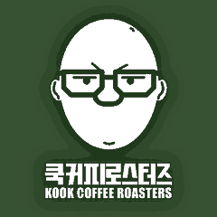

WHOLESALE · 원두 납품
카페 원두는
매번 같은 맛이어야 합니다
좋은 커피 한 잔에는 원두만 필요한 게 아닙니다. 레시피, 장비, 물, 그리고 맛이 흔들릴 때 같이 원인을 찾아줄 사람이 필요합니다. 쿡커피로스터즈는 원두를 보내는 데서 끝내지 않고, 사장님 매장에서 그 맛이 나올 때까지 함께합니다.
쿡커피로스터즈
15년로스팅 경력
20회대회 수상
APP주문·결제·배송 한 번에
쿡커피 패밀리 지원
레시피 가이드RECIPE
매장 장비에 맞춰 원두별 추출 레시피를 드립니다. 에스프레소, 필터, 라떼 메뉴까지 시작 값을 함께 잡습니다.
상시 피드백FEEDBACK
맛이 달라졌다 싶으면 바로 연락 주세요. 원두 문제인지, 그라인더·물·레시피 문제인지 같이 찾습니다.
매장 점검REGULAR CHECK
익산·전북 거래처는 직접 방문해 추출 상태를 점검합니다.
추출 교육TRAINING
쿡커피 커피바에서, 또는 매장에 찾아가 직원 추출 교육을 진행합니다.
패밀리 가격FAMILY
쿡커피 패밀리(납품 거래처)가 되면 이달의 커피를 더 저렴한 가격에 받으실 수 있습니다. 블랜드 메뉴에 싱글오리진 메뉴까지 부담 없이 더할 수 있습니다.
납품 원두
블랜드
매장 기본 메뉴용 원두. 앤서 블랜드, 베리라이크 블랜드.
싱글오리진
매달 바뀌는 이달의 커피. 패밀리 가격으로 받아 매장에서 싱글오리진 메뉴로 판매하실 수 있습니다.
디카페인
디카페인 메뉴용 원두도 납품합니다.
시작하는 방법
- 납품 문의서 작성매장 정보, 쓰는 장비, 월 사용량을 남겨주세요.
- 원두 추천과 상담문의서를 보고 매장에 맞는 원두를 추천드립니다.
- 샘플 테스트추천 원두를 샘플로 받아 매장에서 직접 내려보세요. 쿡커피 커피바에 오셔서 맛보셔도 됩니다.
- 정기 납품전용 앱으로 주문하면 볶아서 보내드립니다. 결제와 배송 확인도 앱에서 한 번에 됩니다.
주문 · 결제 · 배송
- 샘플원두별 샘플을 보내드립니다. 비용과 수량은 상담 때 안내드립니다.
- 주문거래처 전용 주문 앱에서 주문하고 결제까지 한 번에 끝납니다. 배송 현황도 앱에서 바로 확인할 수 있습니다.
- 로스팅주문을 받으면 볶아서 보냅니다.
- 결제주문할 때 앱에서 바로 결제합니다.
- 세금계산서매월 말 일괄 발행합니다.
- 배송택배 발송. 4kg 이상 주문하면 무료배송입니다.
- 단가원두 종류와 월 사용량에 맞춰 안내드립니다.
자주 묻는 질문
소량으로도 납품받을 수 있나요?
가능합니다. 월 사용량을 알려주시면 맞춰서 안내드립니다.
카페 오픈 전인데 상담받을 수 있나요?
네. 원두 선택부터 메뉴 레시피까지 오픈 준비 단계에서 함께 잡아드립니다.
지금 쓰는 원두에서 바꾸면 손님이 눈치챌까요?
지금 메뉴 맛을 먼저 맛보고, 손님이 익숙한 방향을 지키면서 바꾸는 방법을 같이 찾습니다.